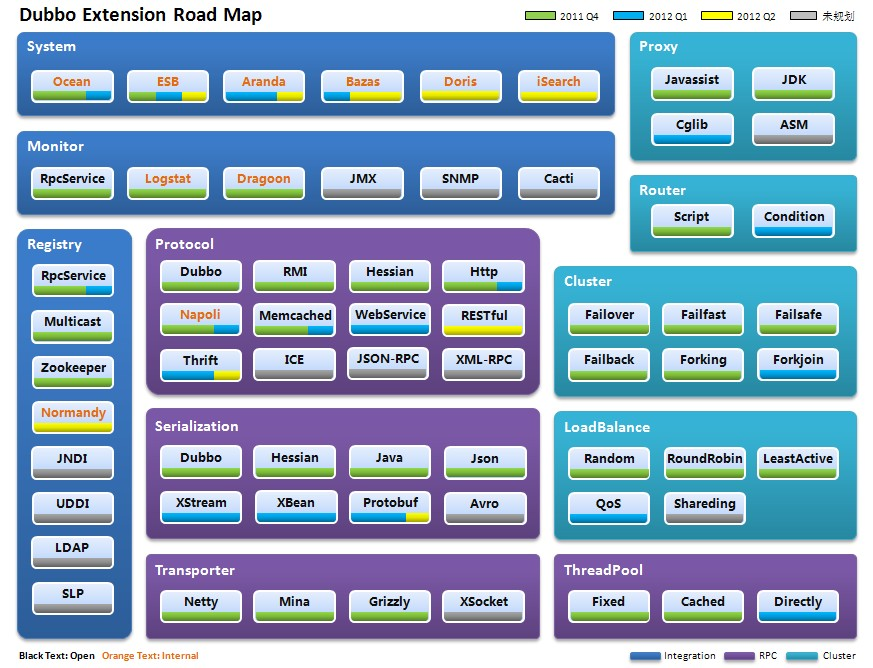

Dubbo是阿里巴巴的SOA框架， 实现了RPC远程服务调用
用户增多后,网站规模必将扩大常规的ORM,MVC已不能满足需要,这时需要增加RPC来确保服务有条不紊的进行

单一应用架构:当网站流量很小时,只需一个应用,将所有功能都部署在一起,靠增加机器来提高加速度,这时用的是:数据访问框架(ORM)
垂直应用架构:当访问量逐渐增大,将应用拆成互不相干的几个应用,以提升效率,这时用的是:Web框架(MVC)
分布式服务架构:当垂直应用越来越多,应用之间存在交互,这时将业务抽取出来,作为独立的服务,形成稳定的服务中心,使前端应用能更快速的响应多变的市场需求,这时用的是:分布式服务框架(RPC)
流动计算架构:当服务越来越多,容量的评估,小服务资源的浪费等问题逐渐显现,此时需增加一个调度中心基于访问压力实时管理集群容量,提高集群利用率,这时用的是:资源调度和治理中心(SOA)

第一步:要将服务现在每天的调用量,响应时间,都统计出来,作为容量规划的参考指标
第二部:动态调整权重,在线上将某台机器的权重一直加大,并在加大的过程中记录响应时间的变化,直到响应时间到达阀值,记录此时的访问量,再以此访问量乘以机器数反推总容量
